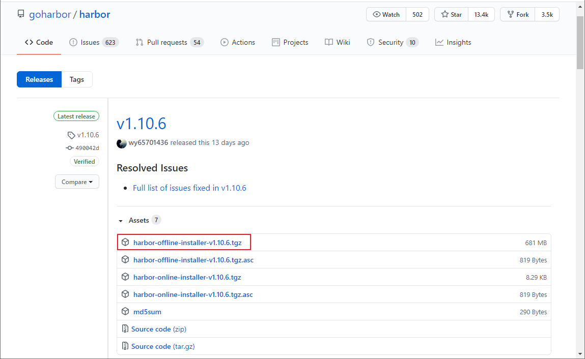
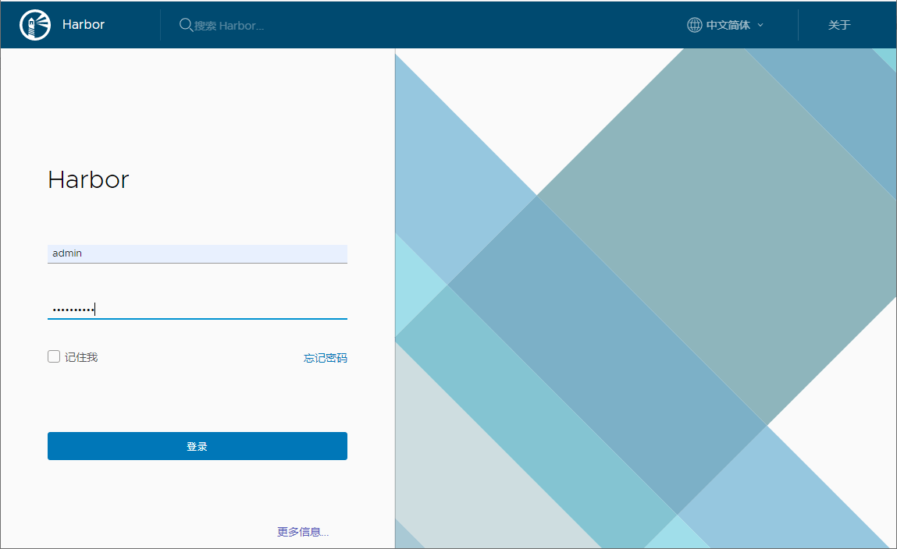
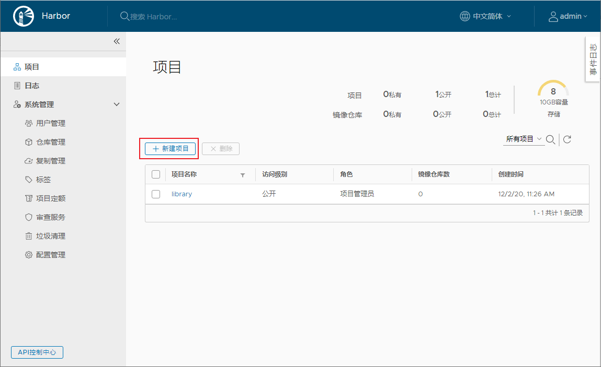
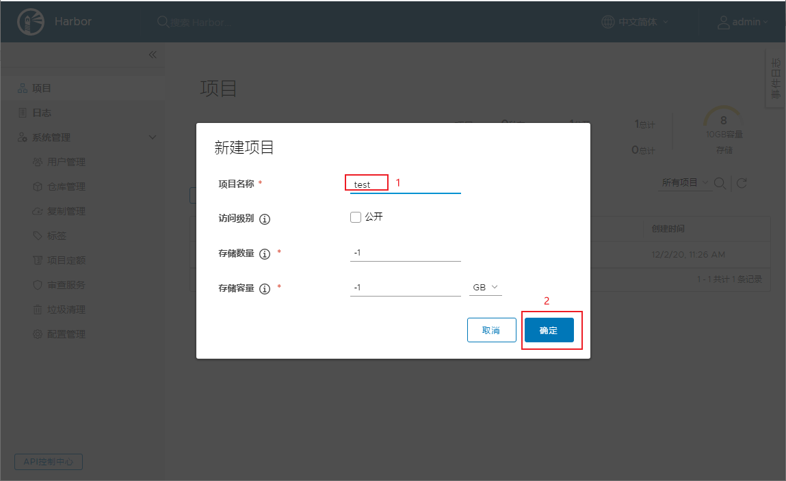
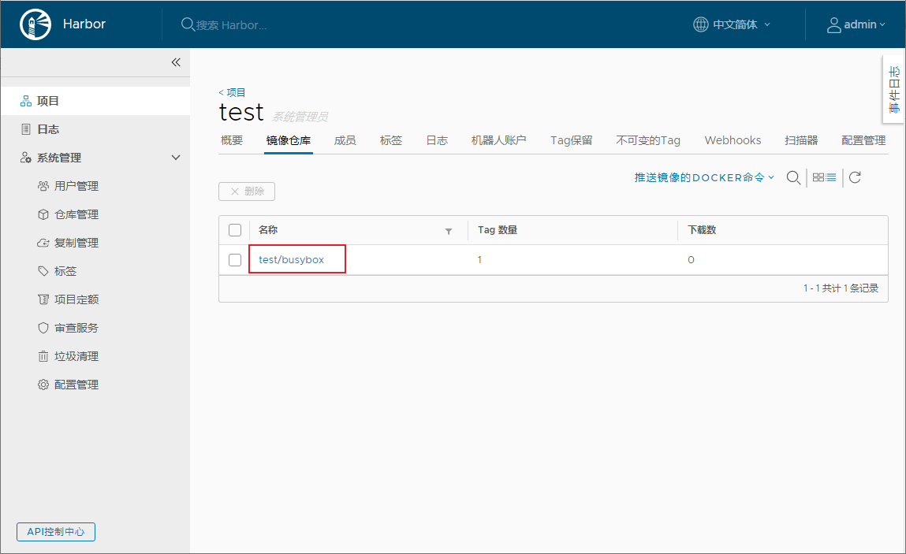
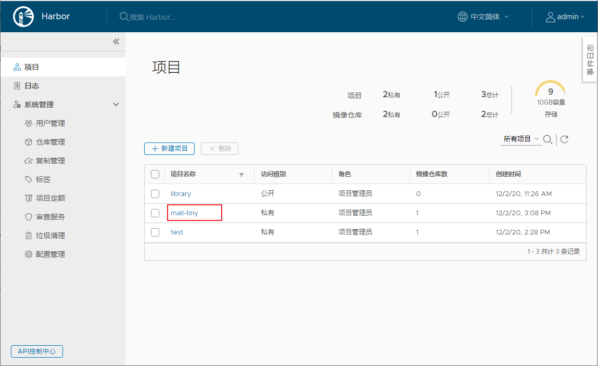
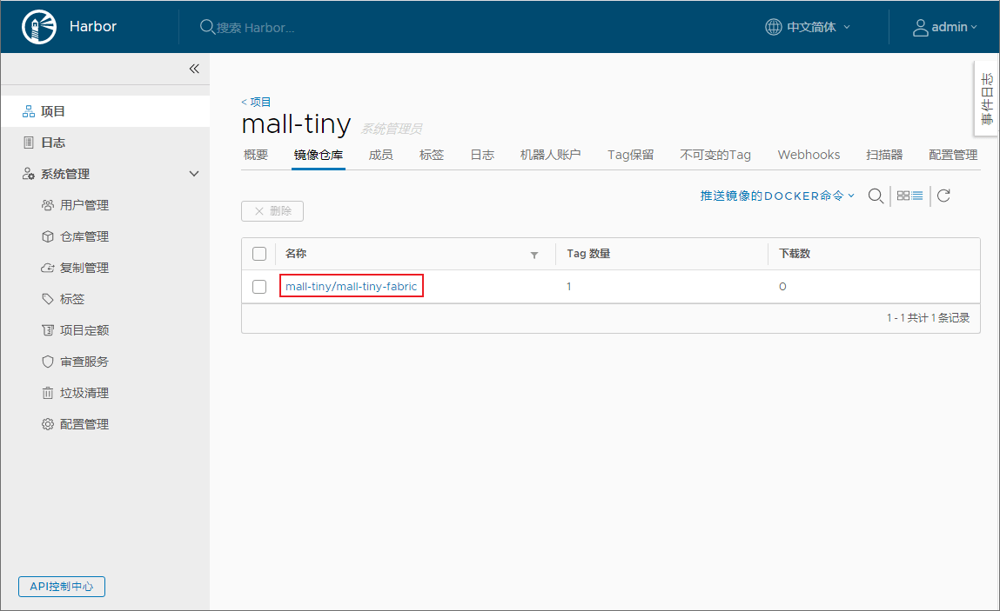

学习不走弯路，关注公众号 回复「学习路线」，获取mall项目专属学习路线！
DockerHub访问慢怎么破？自建个企业级镜像仓库试试！
平时经常用Docker来部署各种环境，发现从DockerHub上下载镜像有时候比较慢。第三方的镜像还可以使用一些国内的镜像仓库来加速，如果我们自己构建的镜像那就不行了。这时候搭建一个私有的镜像仓库很有必要，最近发现Harbor这个企业级镜像仓库，非常好用且功能强大，推荐给大家！
Harbor简介
Harbor是一款开源的Docker镜像仓库服务，在Github上目前有13.4k+Star。提供了基于角色的镜像访问机制，可以保护你的镜像安全。
安装
学习开源项目的第一步，一般都是把它运行起来，我们先来把Harbor运行起来吧！
- 下载Harbor安装包，这里下载的是
v1.10.6离线版本，下载地址：https://github.com/goharbor/harbor/releases

- 下载完成后上传到Linux服务器，使用如下命令解压；
tar xvf harbor-offline-installer-v1.10.6.tgz
- 解压完成后，所有文件内容如下；
[root@linux-local harbor]# ll
total 700260
drwxr-xr-x. 3 root root 20 Dec 2 11:18 common
-rw-r--r--. 1 root root 3398 Nov 17 11:58 common.sh
-rw-r--r--. 1 root root 5348 Dec 2 14:41 docker-compose.yml
-rw-r--r--. 1 root root 717021676 Nov 17 11:59 harbor.v1.10.6.tar.gz
-rw-r--r--. 1 root root 5882 Dec 2 11:21 harbor.yml
-rwxr-xr-x. 1 root root 2284 Nov 17 11:58 install.sh
-rw-r--r--. 1 root root 11347 Nov 17 11:58 LICENSE
-rwxr-xr-x. 1 root root 1749 Nov 17 11:58 prepare
- 修改Harbor的配置文件
harbor.yml，修改hostname，并注释掉https配置，相关属性说明参考注释即可；
# 指定Harbor的管理界面及镜像仓库访问地址
hostname: 192.168.3.101
# http相关配置
http:
# http端口，如果配置了https，默认使用https
port: 80
# https相关配置
#https:
# # https端口
# port: 443
# # 指定Habor中Nginx的https的证书和私钥地址
# certificate: /your/certificate/path
# private_key: /your/private/key/path
# Harbor默认管理员账号admin的密码
harbor_admin_password: Harbor12345
# Harbor内置PostgreSQL数据库配置
database:
# root用户密码
password: root123
# 最大空闲连接数，小于等于0表示无空闲连接
max_idle_conns: 50
# 最大连接数，小于等于0表示无限制
max_open_conns: 100
# 默认数据目录
data_volume: /data
# Clair configuration
clair:
# The interval of clair updaters, the unit is hour, set to 0 to disable the updaters.
updaters_interval: 12
jobservice:
# Maximum number of job workers in job service
max_job_workers: 10
notification:
# Maximum retry count for webhook job
webhook_job_max_retry: 10
chart:
# Change the value of absolute_url to enabled can enable absolute url in chart
absolute_url: disabled
# 日志配置
log:
# 日志级别配置： debug, info, warning, error, fatal
level: info
# 日志本地存储策略
local:
# 日志文件滚动数量，超过该数量会删除日志文件
rotate_count: 50
# 日志滚动大小，超过该大小会生成新的日志文件
rotate_size: 200M
# 日志存储路径
location: /var/log/harbor
# This attribute is for migrator to detect the version of the .cfg file, DO NOT MODIFY!
_version: 1.10.0
# Configure proxies to be used by Clair, the replication jobservice, and Harbor. Leave blank if no proxies are required.
proxy:
http_proxy:
https_proxy:
# no_proxy endpoints will appended to 127.0.0.1,localhost,.local,.internal,log,db,redis,nginx,core,portal,postgresql,jobservice,registry,registryctl,clair,chartmuseum,notary-server
no_proxy:
components:
- core
- jobservice
- clair
- 使用
install.sh脚本安装Harbor:
./install.sh
- Harbor启动成功后会输出如下信息，这里需要注意的是Harbor会启动Nginx、Redis之类的容器，以前创建过的需要先删除掉，看到
started successfully就表示启动成功了；
[Step 0]: checking if docker is installed ...
Note: docker version: 19.03.5
[Step 1]: checking docker-compose is installed ...
Note: docker-compose version: 1.24.0
[Step 2]: loading Harbor images ...
Loaded image: goharbor/harbor-migrator:v1.10.6
Loaded image: goharbor/harbor-core:v1.10.6
Loaded image: goharbor/harbor-db:v1.10.6
Loaded image: goharbor/harbor-registryctl:v1.10.6
Loaded image: goharbor/nginx-photon:v1.10.6
Loaded image: goharbor/clair-photon:v1.10.6
Loaded image: goharbor/clair-adapter-photon:v1.10.6
Loaded image: goharbor/harbor-portal:v1.10.6
Loaded image: goharbor/harbor-log:v1.10.6
Loaded image: goharbor/registry-photon:v1.10.6
Loaded image: goharbor/notary-signer-photon:v1.10.6
Loaded image: goharbor/harbor-jobservice:v1.10.6
Loaded image: goharbor/redis-photon:v1.10.6
Loaded image: goharbor/prepare:v1.10.6
Loaded image: goharbor/notary-server-photon:v1.10.6
Loaded image: goharbor/chartmuseum-photon:v1.10.6
[Step 3]: preparing environment ...
[Step 4]: preparing harbor configs ...
prepare base dir is set to /mydata/harbor/harbor
WARNING:root:WARNING: HTTP protocol is insecure. Harbor will deprecate http protocol in the future. Please make sure to upgrade to https
Clearing the configuration file: /config/log/logrotate.conf
Clearing the configuration file: /config/log/rsyslog_docker.conf
Clearing the configuration file: /config/nginx/nginx.conf
Clearing the configuration file: /config/core/env
Clearing the configuration file: /config/core/app.conf
Clearing the configuration file: /config/registry/config.yml
Clearing the configuration file: /config/registry/root.crt
Clearing the configuration file: /config/registryctl/env
Clearing the configuration file: /config/registryctl/config.yml
Clearing the configuration file: /config/db/env
Clearing the configuration file: /config/jobservice/env
Clearing the configuration file: /config/jobservice/config.yml
Generated configuration file: /config/log/logrotate.conf
Generated configuration file: /config/log/rsyslog_docker.conf
Generated configuration file: /config/nginx/nginx.conf
Generated configuration file: /config/core/env
Generated configuration file: /config/core/app.conf
Generated configuration file: /config/registry/config.yml
Generated configuration file: /config/registryctl/env
Generated configuration file: /config/db/env
Generated configuration file: /config/jobservice/env
Generated configuration file: /config/jobservice/config.yml
loaded secret from file: /secret/keys/secretkey
Generated configuration file: /compose_location/docker-compose.yml
Clean up the input dir
Note: stopping existing Harbor instance ...
Stopping harbor-jobservice ... done
Stopping harbor-core ... done
Stopping redis ... done
Stopping registryctl ... done
Stopping registry ... done
Stopping harbor-db ... done
Stopping harbor-portal ... done
Stopping harbor-log ... done
Removing harbor-jobservice ... done
Removing harbor-core ... done
Removing redis ... done
Removing registryctl ... done
Removing registry ... done
Removing harbor-db ... done
Removing harbor-portal ... done
Removing harbor-log ... done
Removing network harbor_harbor
[Step 5]: starting Harbor ...
Creating network "harbor_harbor" with the default driver
Creating harbor-log ... done
Creating harbor-portal ... done
Creating registry ... done
Creating harbor-db ... done
Creating registryctl ... done
Creating redis ... done
Creating harbor-core ... done
Creating harbor-jobservice ... done
Creating nginx ... done
✔ ----Harbor has been installed and started successfully.----
- 我们可以使用
docker images命令查看下安装Harbor安装的Docker镜像，还挺多的；
REPOSITORY TAG IMAGE ID CREATED SIZE latest dc3bacd8b5ea 8 days ago 1.23MB
goharbor/chartmuseum-photon v1.10.6 01b70eccaf71 2 weeks ago 178MB
goharbor/harbor-migrator v1.10.6 a5d4a4ee44e4 2 weeks ago 356MB
goharbor/redis-photon v1.10.6 99e25b65195c 2 weeks ago 132MB
goharbor/clair-adapter-photon v1.10.6 aa72598ecc12 2 weeks ago 61.3MB
goharbor/clair-photon v1.10.6 da1b03030e34 2 weeks ago 171MB
goharbor/notary-server-photon v1.10.6 37c8bed3e255 2 weeks ago 142MB
goharbor/notary-signer-photon v1.10.6 c56d82220929 2 weeks ago 139MB
goharbor/harbor-registryctl v1.10.6 1d3986d90c65 2 weeks ago 101MB
goharbor/registry-photon v1.10.6 3e669c8204ed 2 weeks ago 83.7MB
goharbor/nginx-photon v1.10.6 a39d8dd46060 2 weeks ago 43.7MB
goharbor/harbor-log v1.10.6 1085d3865a57 2 weeks ago 106MB
goharbor/harbor-jobservice v1.10.6 aa05538acecf 2 weeks ago 143MB
goharbor/harbor-core v1.10.6 193e76e6be5d 2 weeks ago 129MB
goharbor/harbor-portal v1.10.6 942a9c448850 2 weeks ago 51.8MB
goharbor/harbor-db v1.10.6 37da2e5414ae 2 weeks ago 170MB
goharbor/prepare v1.10.6 35f073e33ec5 2 weeks ago 177MB
- 访问Harbor的管理界面，输入账号密码
admin:Harbor12345登录即可，访问地址：http://192.168.3.101/

使用
接下来我们就可以使用Harbor来管理我们的镜像了。
- 首先点击
新建项目按钮，新建一个项目：

- 这里新建一个叫做
test的私有项目；

- 由于
docker login命令默认不支持http访问，所以我们需要手动开启，使用Vim编辑器修改docker的配置文件daemon.json；
vi /etc/docker/daemon.json
- 添加一行
insecure-registries配置即可，允许使用非安全方式访问Harbor镜像仓库，注意不要少了端口号80；
{
"registry-mirrors":["https://xxx.aliyuncs.com"],
"insecure-registries":["192.168.3.101:80"]
}
- 再次重新启动docker服务；
systemctl restart docker
- 再次使用
install.sh启动Harbor服务；
./install.sh
- 使用
docker login命令访问Harbor镜像仓库，注意加上端口号为80；
[root@linux-local harbor]# docker login 192.168.3.101:80
Username: admin
Password:
WARNING! Your password will be stored unencrypted in /root/.docker/config.json.
Configure a credential helper to remove this warning. See
https://docs.docker.com/engine/reference/commandline/login/#credentials-store
Login Succeeded
- 编写Dockerfile脚本，用于构建Docker镜像，一个最简单的busybox脚本如下；
FROM busybox:latest
- 使用如下命令构建一个自己的busybox镜像；
docker build -t 192.168.3.101:80/test/busybox .
- 将自己构建的busybox镜像推送到Harbor镜像仓库；
docker push 192.168.3.101:80/test/busybox
- 推送成功后在Harbor的管理界面中就可以查看到busybox镜像了；

- 由于Harbor是用Docker Compose部署的，可以直接使用Docker Compose的命令来停止和启动。
# 停止Harbor
docker-compose stop
# 启动Harbor
docker-compose start
结合SpringBoot使用
这里使用之前的
mall-tiny-fabric项目来演示下，如何使用Maven插件一键打包并推送到Harbor镜像仓库。
- 首先修改项目的
pom.xml文件，修改推送的镜像仓库地址，并添加认证信息即可；
<plugin>
<groupId>io.fabric8</groupId>
<artifactId>docker-maven-plugin</artifactId>
<version>0.33.0</version>
<executions>
<!--如果想在项目打包时构建镜像添加-->
<execution>
<id>build-image</id>
<phase>package</phase>
<goals>
<goal>build</goal>
</goals>
</execution>
</executions>
<configuration>
<!-- Docker 远程管理地址-->
<dockerHost>http://192.168.3.101:2375</dockerHost>
<!-- Docker 推送镜像仓库地址-->
<pushRegistry>http://192.168.3.101:80</pushRegistry>
<!-- 认证信息-->
<authConfig>
<push>
<username>admin</username>
<password>Harbor12345</password>
</push>
</authConfig>
<images>
<image>
<!--由于推送到私有镜像仓库，镜像名需要添加仓库地址-->
<name>192.168.3.101:80/mall-tiny/${project.name}:${project.version}</name>
<!--定义镜像构建行为-->
<build>
<!--定义基础镜像-->
<from>java:8</from>
<args>
<JAR_FILE>${project.build.finalName}.jar</JAR_FILE>
</args>
<!--定义哪些文件拷贝到容器中-->
<assembly>
<!--定义拷贝到容器的目录-->
<targetDir>/</targetDir>
<!--只拷贝生成的jar包-->
<descriptorRef>artifact</descriptorRef>
</assembly>
<!--定义容器启动命令-->
<entryPoint>["java", "-jar","/${project.build.finalName}.jar"]</entryPoint>
<!--定义维护者-->
<maintainer>macrozheng</maintainer>
<!--使用Dockerfile构建时打开-->
<!--<dockerFileDir>${project.basedir}</dockerFileDir>-->
</build>
<!--定义容器启动行为-->
<run>
<!--设置容器名，可采用通配符-->
<containerNamePattern>${project.artifactId}</containerNamePattern>
<!--设置端口映射-->
<ports>
<port>8080:8080</port>
</ports>
<!--设置容器间连接-->
<links>
<link>mysql:db</link>
</links>
<!--设置容器和宿主机目录挂载-->
<volumes>
<bind>
<volume>/etc/localtime:/etc/localtime</volume>
<volume>/mydata/app/${project.artifactId}/logs:/var/logs</volume>
</bind>
</volumes>
</run>
</image>
</images>
</configuration>
</plugin>
- 推送镜像之前需要在Harbor中创建好
mall-tiny项目，否则会无法推送镜像；

- 之后使用Maven插件打包镜像并推送到Harbor仓库，具体可以参考《还在手动部署SpringBoot应用？试试这个自动化插件！》，推送过程中输出信息如下；
[INFO] Scanning for projects...
[INFO]
[INFO] ------------------------------------------------------------------------
[INFO] Building mall-tiny-fabric 0.0.1-SNAPSHOT
[INFO] ------------------------------------------------------------------------
[INFO]
[INFO] --- docker-maven-plugin:0.33.0:push (default-cli) @ mall-tiny-fabric ---
[INFO] DOCKER> The push refers to repository [192.168.3.101:80/mall-tiny/mall-tiny-fabric]
###############
[INFO] DOCKER> 0.0.1-SNAPSHOT: digest: sha256:3a54682fd3b04526f6da0916e98f3d0d5ba4193a8ad6aafbe6c05a1badf6c13b size: 2212
[INFO] DOCKER> Temporary image tag skipped. Target image '192.168.3.101:80/mall-tiny/mall-tiny-fabric:0.0.1-SNAPSHOT' already has registry set or no registry is available
[INFO] DOCKER> Pushed 192.168.3.101:80/mall-tiny/mall-tiny-fabric:0.0.1-SNAPSHOT in 2 minutes and 8 seconds
[INFO] ------------------------------------------------------------------------
[INFO] BUILD SUCCESS
[INFO] ------------------------------------------------------------------------
[INFO] Total time: 02:11 min
[INFO] Finished at: 2020-12-02T15:11:10+08:00
[INFO] Final Memory: 19M/219M
[INFO] ------------------------------------------------------------------------
Process finished with exit code 0
- 打开Harbor管理页面，发现
mall-tiny-fabric镜像已经存在了。

总结
Harbor提供了管理界面让我们可以更方便地管理Docker镜像，同时添加了基于角色的权限管理功能来保护镜像的安全。之前我们为了安全地使用镜像，需要使用繁琐的TLS来控制远程Docker服务打包镜像，具体参考《Docker服务开放了这个端口，服务器分分钟变肉机！》。现在我们只要搭建一个Harbor镜像仓库，然后本地打包好镜像上传到Harbor，需要使用镜像的时候直接从Harbor下载即可！
参考资料
官方文档：https://goharbor.io/docs/2.1.0/install-config/
项目源码地址
https://github.com/macrozheng/mall-learning/tree/master/mall-tiny-fabric
公众号